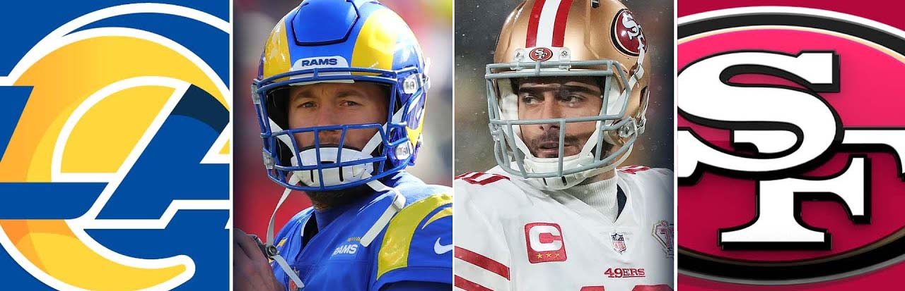

49ers face divison foe once more, this time with a trip to Super Bowl 56 on the line
According to Vivid Seats in this article by NBC, Sofi stadium will be filled 65% by 49ers fans. note that the 49ers are playing away, this is not a home game. this is a very similar sernario to what happened week 18 when the 49ers were fighting for a playoff berth. The 49ers trailed by 17 points at one point in the game & cameback to win 27-24 in overtime.
It is no surprise that another NFC West team will represent the NFC in the Super Bowl. Arguably the toughest division in football right now. 3 NFC teams (49ers, Rams, Cardinals) made the post season, now 2 NFC West teams will battle it out for the NFC Title. Here's a look at the 2021 NFC West standings.
| Team | W/L |
|---|---|
| Rams | 12-5 |
| Cardinals | 11-6 |
| 49ers | 10-7 |
| Seahawks | 7-10 |
This time around, the 49ers must not start slow like in the week 18 game, they must get to a hot start and control the game. The Rams are coming off 2 impressive Playoff wins, same with the 49ers. Both teams are hot. Here's what the 49ers must do to stay alive once again and go back to the Super Bowl
The 49ers will play either the Bengals or Chiefs in the Super Bowl if they win today. If it's against the Chiefs, it'll be a rematch of Super Bowl 54 when the 49ers lost to the Chiefs 31-20 after being up 20-10 entering the 4th quarter. click here to check out our Super Bowl Preview.